Verkefni 3 - 3D prentun og 3D skönnun
Undirbúningur
Þetta er verkefni þrjú í áfanganum VÉL403G, sem Hafliði Ásgeirsson kennir vorið 2021. Verkefnið er tvískipt, annars vegar er það einstaklingshlutinn og hóphlutinn.
Í einstaklingshlutanum átti að hanna módel fyrir 3D prentun sem ekki væri hægt að framkvæma með frádráttar framleiðslu (addative vs subtractive). Prentaðu hlutinn (max 100g af plasti skv. slicer). Einnig átti að 3D skanna einhvern hlut, t.d. með photogrammetríu.
Í hóphlutanum átti að velja 3D prentara og ákvarðið hönnunar reglur / þvinganir og skráið á sameiginlegu vefsvæði.
3D prentun
Ákvarða hönnunar reglur / þvinganir á 3D prentara
Mikilvægt er að hafa hönnunar reglur / þvinganir á þeim 3D prentara sem varð fyrir valinu í huga þegar við hönnun á þeim hlut sem verður svo prentaður út. Ákveðnu módeli var hlaðið niður af netinu og það prentað út. Þennan hluta gerði ég með hópnum mínum, með Björgu Evu Steinþórdóttur og Andra Degi Ófeigssyni. Hér má sjá hvernig farið var að og afraksturinn. Eins og sjá má á link-num hér að ofan er kemur skekkja í módelið í 60 gráðum, þess vegna ákvað ég svo seinna í verkefninu að setja styrkingu á mína hönnun.
Vinna í Fusion 360
Mig langaði að prenta út hlut sem kæmi svo að góðum notum. Ég lendi oft í því að týna litlum eyrnalokkum og ákvað því að hanna eyrnalokkastand fyrir litla eyrnalokka.
Ég byrjaði á að skilgreina "parameters". Á myndinni hér að neðan má bæði sjá hvar það var gert og hverjir þessir "parameters" voru.
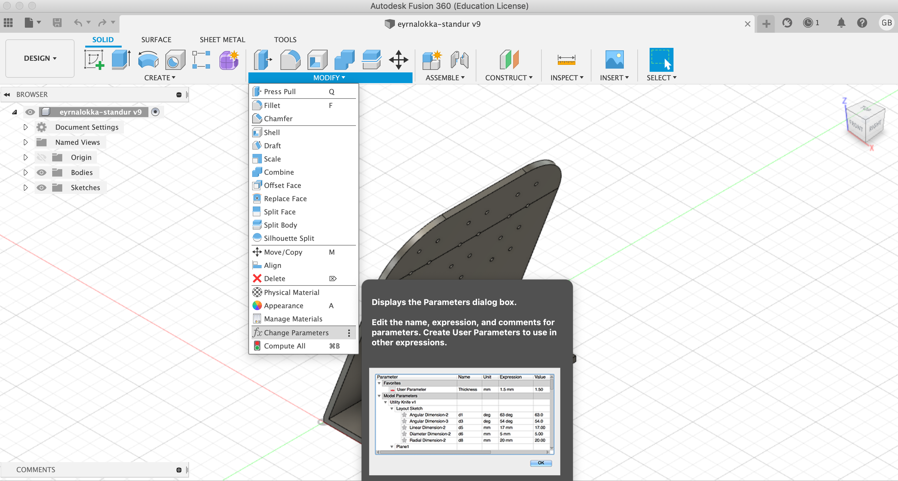 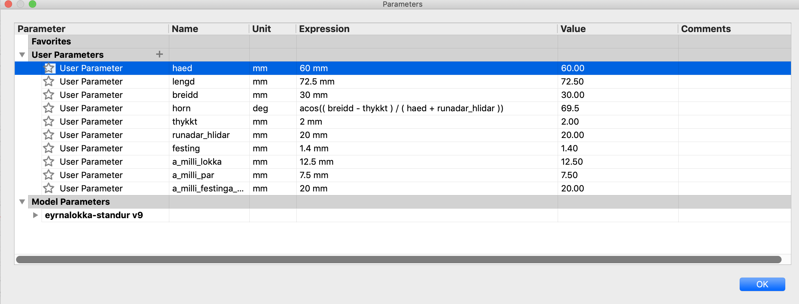Til að auðvelda hönnunina og til að tryggja að standurinn myndi koma út eins og ég vildi ákvað ég fyrst að teikna standinn upp í höndunum. Hér að neðan má sjá þá teikningu.
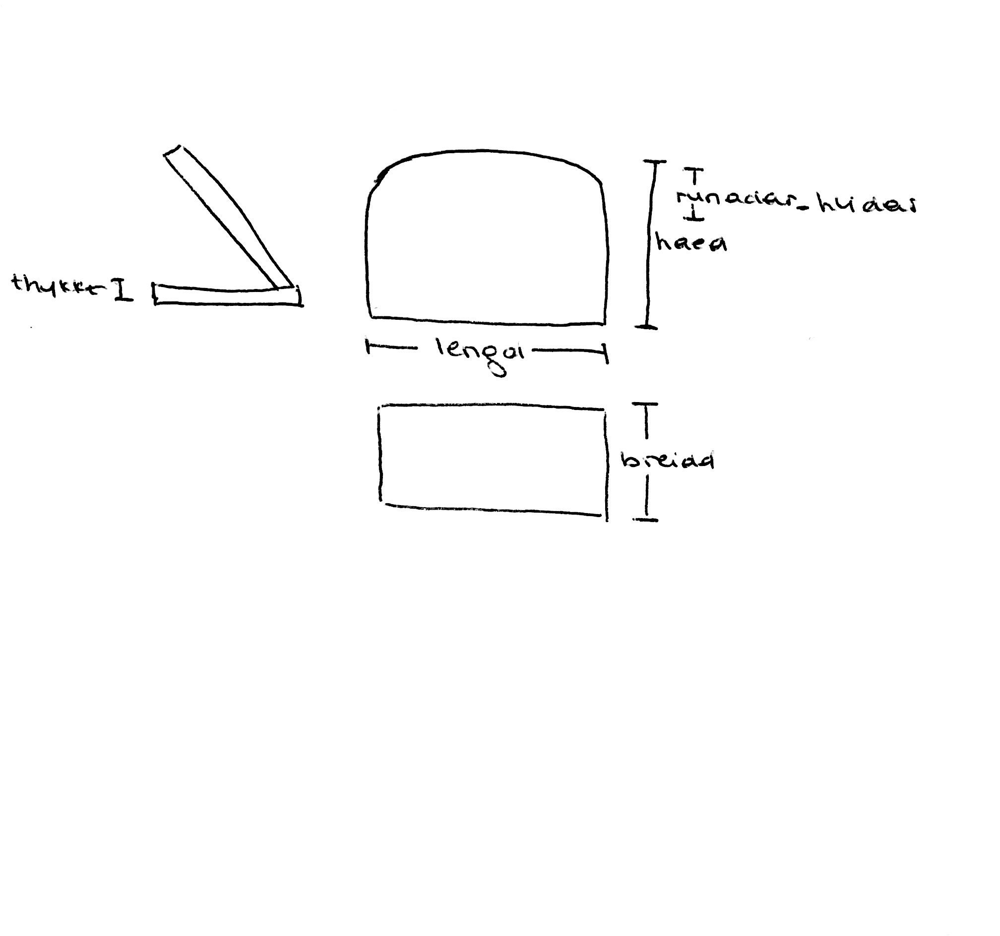Ég vildi að þegar maður horfði á hlutinn frá hlið að botninn á standinum færi jafn mikið út og hallinn á þeim hluta sem maður setur eyrnalokkana á. Með hjálp "Amma Illa" setti ég því "parametrann" "horn" sem "acos(( breidd - thykkt ) / ( haed + runadar_hlidar ))". Hér að neðan má sjá hvernig hluturinn lítur út frá hlið.
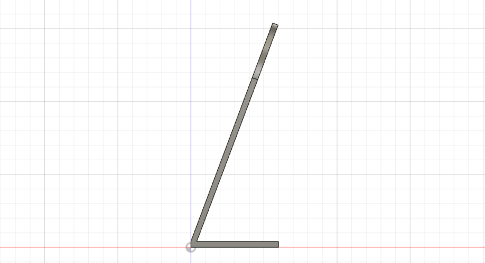Ég setti byrjaði svo að teikna botninn og notaði viðeigandi breytur. Þegar ég teiknaði þá hlið sem eyrnalokkarnir eru hengdir á byrjaði ég á að teikna kassa sem hafði hæðina "haed-runadar_hlidar". Þegar ég teiknaði þann hluta sem er blár á myndinni hér að neðan þá teiknaði ég tvo hringi, sitt hvoru meginn við hliðarnar. Sá hringur hafði radius upp á "runadar_hlidar". Hér að neðan má einnig sjá teikninguna af þeim hluta. Ég teiknaði svo línu á milli hringana og notaði "trim" sem er undir "modify" til þess að taka út þann hluta hringana sem ég vildi taka út, þ.e. alla nema þá sem afmarka þessa hlið. Síðan "extrude-aði" ég teikninguna um "thykkt".
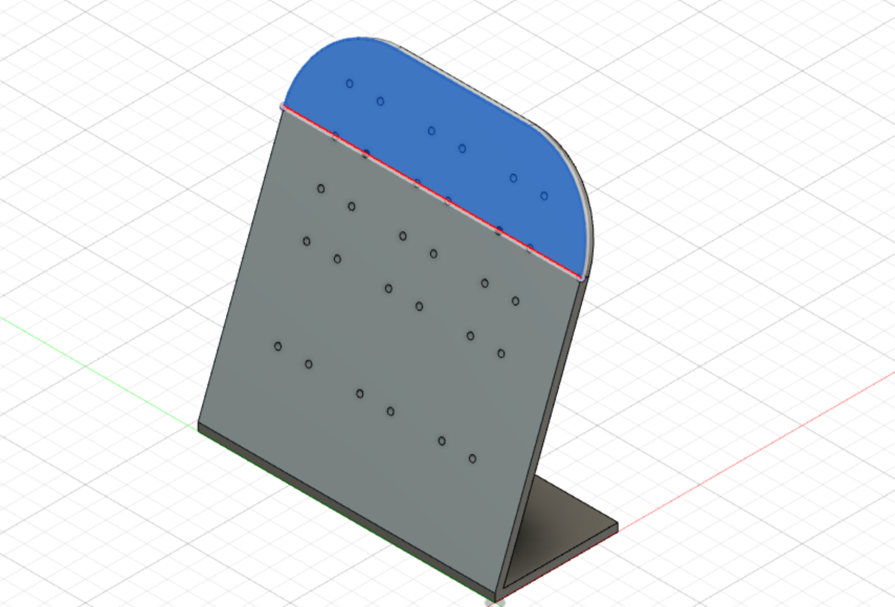 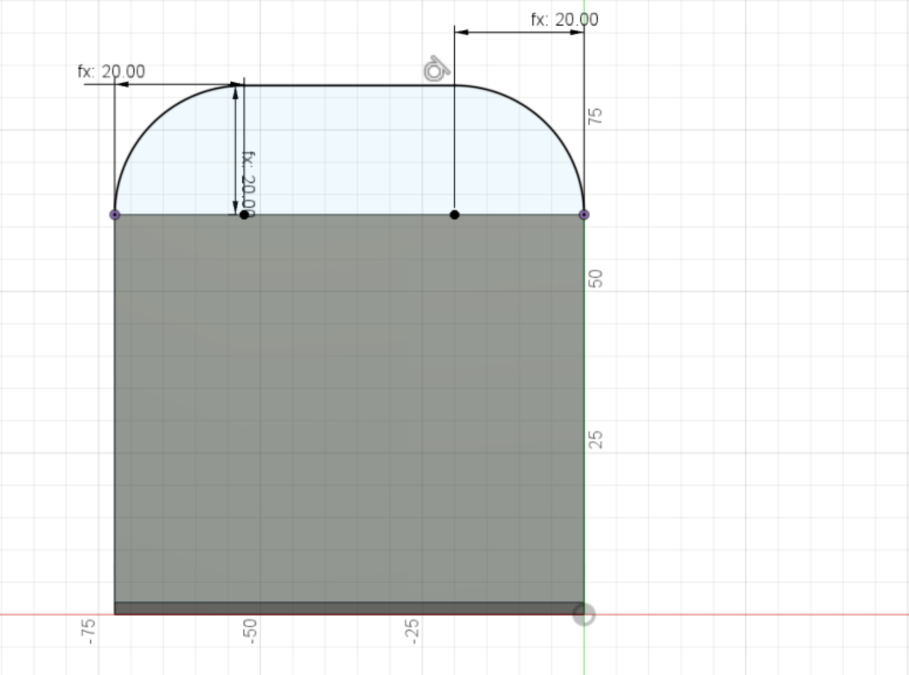Nú var komið að því að gera götin fyrir eyrnalokkana. Ég ákvað að það væri hægt að geyma 15 pör af eyrnalokkum á standinum. Neðstu tvær línurnar voru með aðeins lengra á milli, hvað varðar hæðina, þar sem ég hafði hugsað mér að geyma stærri eyrnalokka í seinustu tveimur línunum. Þá skilgreindi ég ég "parameters" bæði lengdina á milli para af eyrnalokkum og svo á milli parana. Það voru 12.5 mm á milli para og 7.5 mm á milli eyrnalokka í pari.
Ég notaði skipmál til að mæla þvermálið á eyrnalokkum sem ég átti, það var 1mm, setti í 1,4mm í þvermál til þess að þetta yrði ekki of þröngt og til að tryggja að það væri auðvelt að festa eyrnalokkana í. Hér að neðan má sjá allar þær "constraints" sem voru sett á götin.
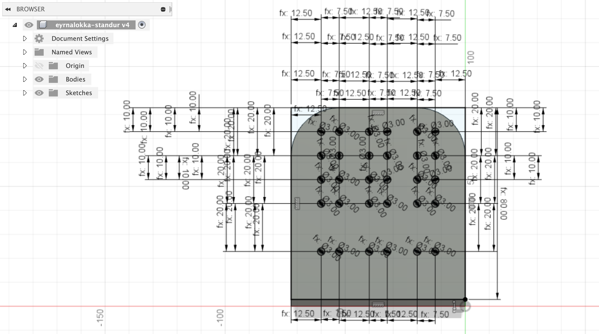Hér að neðan má sjá teikninguna í heild sinni.
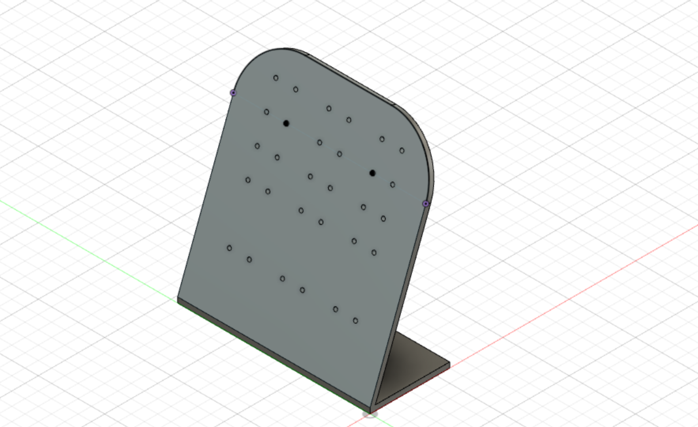3D prentun
Ég ákvað að prenta í Ultimaker Extended. Ég var búin að vista hlutinn sem STL og fékk aðstoð frá kennara með að setja upp viðeigandi stillingar. Ákveðið var að setja vatnsleysanlegan stuðning til að tryggja að götin myndu koma rétt út þar sem þau voru mjög lítil. Hér að neðan má sjá mynd af styrkingunni.

Þegar búið var að setja upp allar þær stillingar sem áttu að vera og búið að velja réttan 3D prentara, var teiknigin sett á minniskubb og farið með hann í prentarann. Hér fyrir neðan má sjá mynd af því þegar prentarinn var farinn af stað.
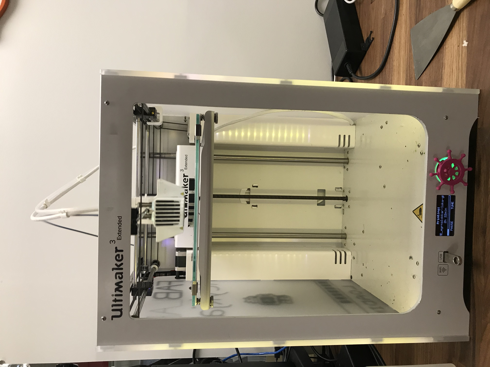Lokaniðurstaða
Verkefnið gekk vel fyrir sig, hér má sjá myndir af því hvernig eyrnalokkastandurinn leit út þegar hann kom úr prentaranum. Ég setti standinn svo í vatn þar sem styrkingin leystist upp.
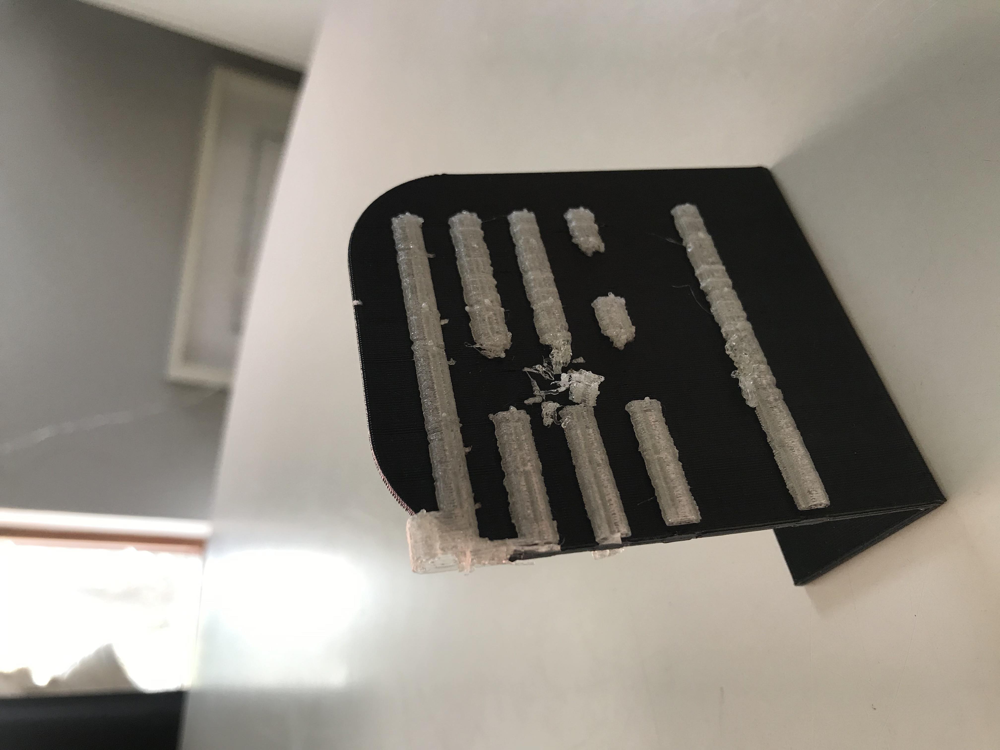 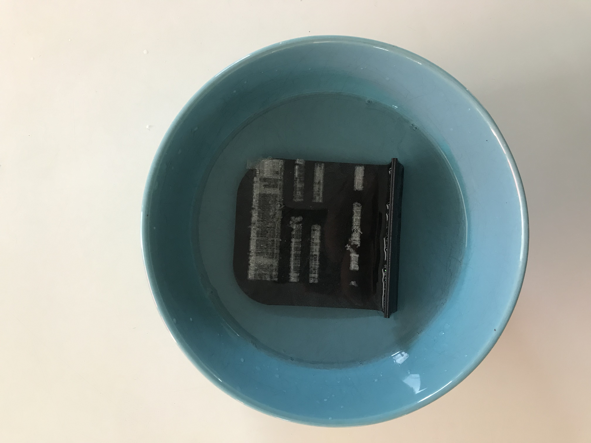Þegar eyrnalokkastandurinn var svo búinn að vera í vatni í dágóðan tíma leit hann svona út.
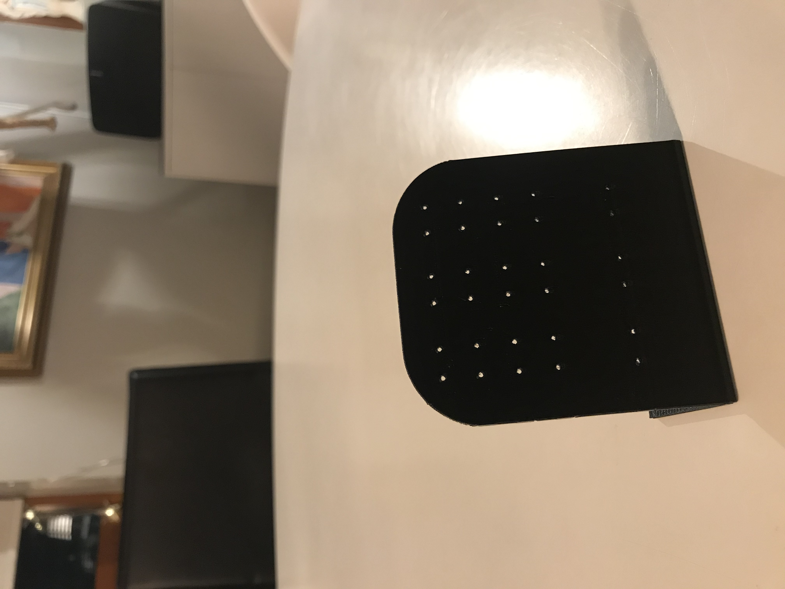3D skönnun
Undirbúningur
Ég hlóð niður forritinu 3D zephyr, hlekkin af forritinu má finna hér . Ég hlóð niður ókeypis útgáfunni af forritinu, hún virkaði þó ekki fyrir Mac stýrikerfi og fékk ég því tölvu systur minnar lánaða til þess að framkvæma þennan hluta verkefnisins.
Ég tók myndir af banana og hlóð inn á Google Drive til þess að tryggja að myndgæðin myndu haldast góð.
Á heimsíðu 3D zephyr má finna góð kennslumyndbönd, þau má finna hér
Ég hlóð niður myndunum og bjó til nýtt verkefni í 3D zephyr. Því næst hlóð ég myndunum inn á forritið, þá var 18 af þeim 50 myndum sem ég hlóð inn hafnað svo við gerð verkefnisins notaði ég 32 myndur. Þegar því var lokið fór í ég "advanced" undir "workflow" og valdi "Dense Point Cloud Generation". Þá valdi ég "Close Range" í "Category" og "Default" í "Presets". Hér fyrir neðan má sjá hvernig myndin leit þá út.
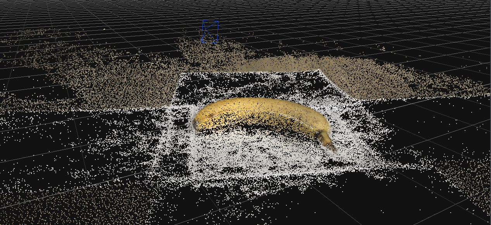Því næst eyddi ég út þeim umhverfinu í kring um bananann. Hér að neðan má sjá myndir af honum þegar því var lokið.
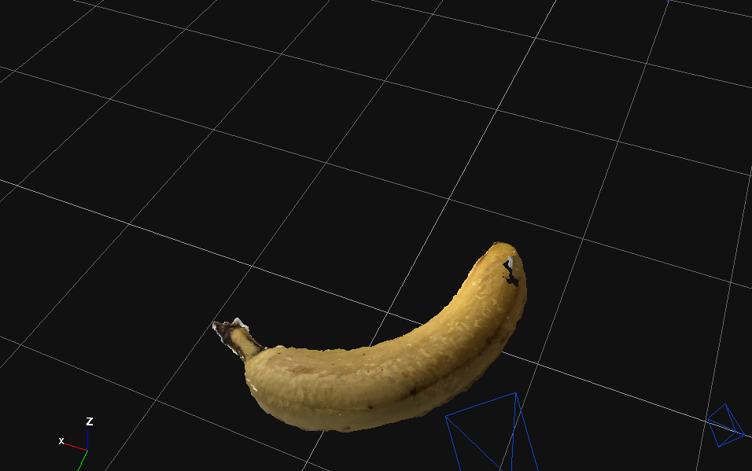 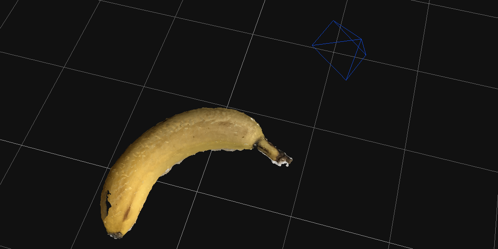 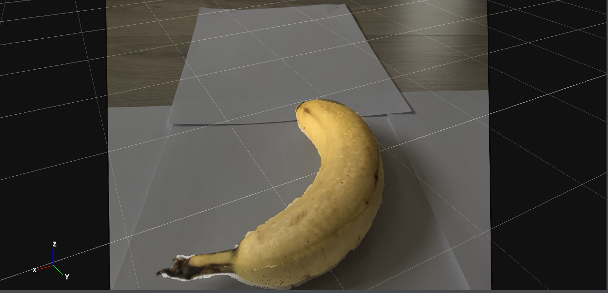Eftir að hafa gert þetta verkefni myndi ég ráðleggja þeim sem ætla að 3D skanna að nota myndavél en ekki myndavélina úr símanum. Það reyndist erfitt að taka úr þá hluta sem áttu ekki að vera til staðar út þar sem myndgæðin voru ekki nógu góð og myndirnar ekki nógu skýrar.